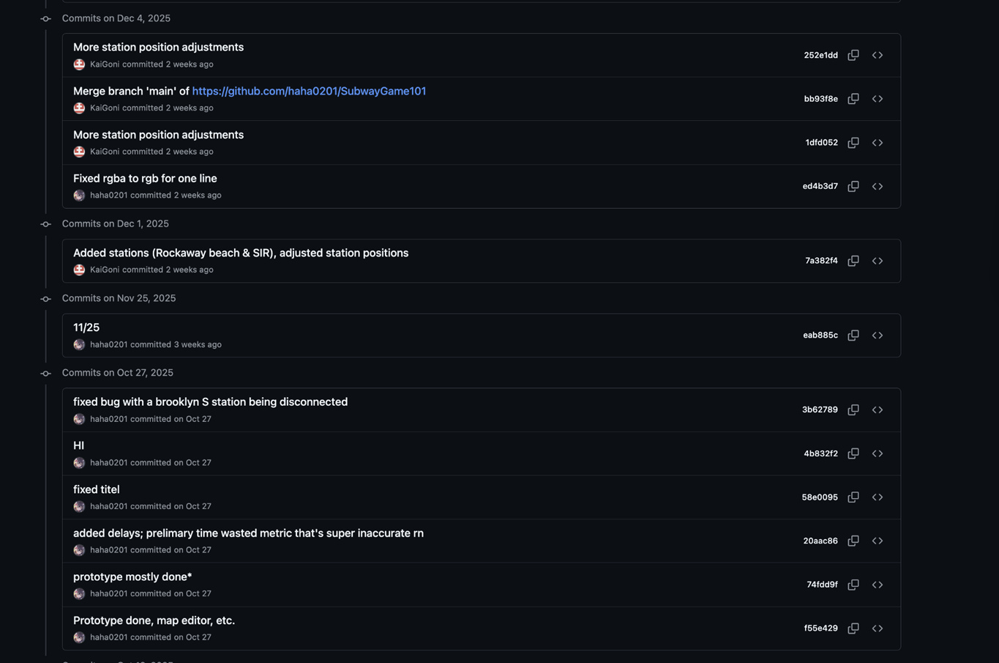

Project Overview
According to the New York State Comptroller, in 2024, the New York City Metropolitan Transportation Authority (MTA) had an 82.2% on-time performance1. This caused significant economic and social impacts on the communities who were affected. Data shows that among employed respondents, 74% said that they subway delays caused them to be late for their meetings, and 18% were reprimanded2. Furthermore, delays are more frequent on certain lines and affect lower-income neighborhoods stronger.
While some improvements are underway such as the implementation of Communication Based Train Control (CBTC), much of real change is dependent on available funds. Only with political advocacy can civilians persuade legislators to make significant change by allocating more money to renovations and upkeep of the existing system, as well as development of new lines to alleviate congestion and backups caused by the delay or failure of a subway line.
This is the Coductorz group project at The Cooper Union's Engineering Design & Problem Solving course consisting of me, Benny Young, Anisa Hossain, Rithik Trehan, and Priva Halpert. Our initial research report can be accessed here.
Objective
The purpose of this project is to create a game that informs players about subway delays in New York City and to educate players on how to minimize delays in their commute. The game will use accurate data from the MTA to create delays in the game, which the player will need to navigate around to arrive at their destination in the shortest time possible.
This project would help players develop strategies in realistic commuting situations to minimize their travel times or choose more reliable routes to minimize delays. The game should also help raise awareness for transit inequality and show how delays disproportionally affect different neighborhoods.
Design Criteria
The game is planned to be made in HTML and JavaScript, and feature an interactive (geographic, by vote of team) subway map where players can click on the map to start from a specific location.
After the player selects a location, the game should allow the player to select a train that the player can ride on, and set their goal to reach Aster Place station (or somewhere close to Cooper Union). The game should consider delays using open access data from the MTA3 various situations such as rush hour, weekend schedules, and location of delays.
Animated art will be drawn to allow a more interactive experience. The animations will take place when traveling on a subway, or when the player arrives at the destination. Then, the game should display information on their trip and how efficient their route was.
Design & Development Process
While Anthony planned the schedule for the project, Anisa drew initial designs for the animations, and Benny started the GitHub repository for the project. Meanwhile, Priva and Rithik did initial research and finding data from NY Open Data.

History of GitHub code
As the game further developed, Anisa continued on working on the animations and Priva created pamphlets for the project. Benny continued on the code, Rithik continued researching for upcoming reports, and Anthony maintained communication between the members to ensure everyone was on the same page and aided on some programming and design decisions.
Towards the final phase of the project, Anthony and Priva collaborated on the pamphlet and the poster, while Benny and Anisa collaborated to incorporate the animations into the code. Rithik maintained communication between the team and later worked on the poster with Priva.

One of the posters developed to communicate the purpose of the project to the players
Analysis
This game is capable of using accurate data from the MTA to create delays in the game, which the player will need to navigate around to arrive at their destination in the shortest time possible. The animation is engaging and occurs when the player performs an action, creating a more complete game feel.
From playtests by the students and faculty of Cooper Union, we were able to also discover that many people did not know the directions of each line. This led to players occasionally taking the train in the incorrect direction, which is a common mistake that commuters make in the real world, which we were happy to be able to simulate in the game.
However, this game can definitely be greatly improved, particularly in the UI design and in edge case situations such as having trains run on nonregular paths (such as the F train running on the crosstown line). The game also may be misleading as it may use outdated information, such as the F/M trains swap.
Conclusion
Overall, this project achieves the goal of creating an interactive game that informs players about subway delays in New York City. The game uses accurate open source data from the MTA to create delays in the game, which the player will need to navigate around to arrive at their destination in the shortest time possible.
Potential features that can be added is the ability to see delays early, mimicking apps such as the MTA app or the Transit app, which can allow the passenger to make decisions earlier and avoid larger delays. Edge case situations can also be added to create less common but realistic scenarios.
The project portfolio can be found here. This game can be played here.
References
Coductorz. “A Review of Reliability in New York City Subways.” A-Review-of-Reliability-in-New-York-City-Subways.pdf
Coductorz. “Coductorz Project Portfolio.” Coductorz-ProjectPortfolio.pdf
DiNapoli, T. P. “Trends in New York City Subway Delays.” Accessed 3-19-2026 https://www.osc.ny.gov/files/reports/pdf/report-10-2026.pdf
Stringer, S. M. “The Human Cost of Subway Delays: A Survey of New York City Riders.” Accessed 3-19-2026 https://comptroller.nyc.gov/reports/the-human-%20cost-of-subway-delays-a-survey-of-new-york-city-riders/#:~:text=As%20the%20findings,everyday%20New%20Yorkers.
NY Open Data. “MTA Subway Schedules: 2024.” Accessed 3-19-2026 https://data.ny.gov/Transportation/MTA-Subway-Schedules-2024/ebrw-j62c/about_data